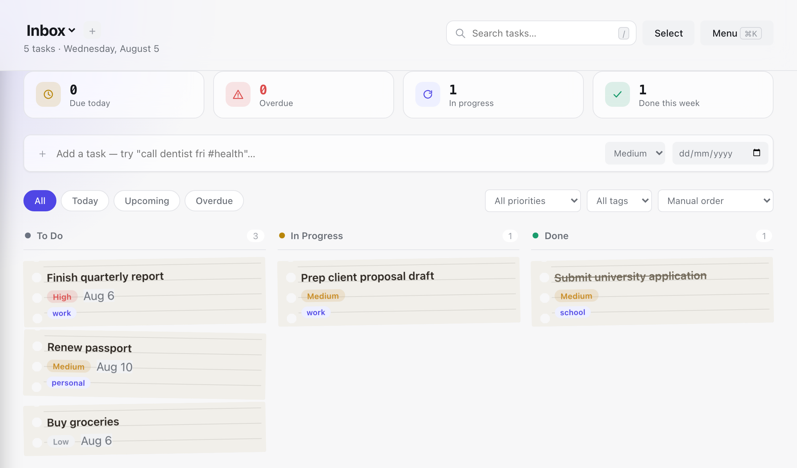

Parv
University student
"I was losing my mind with research spread across five different Google accounts. Having my thesis notes locally encrypted is the only way I actually feel safe about my data. It's just mine."
Private by default
Most task apps want an account and your data before they'll let you write down a single thing. Haven skips that part. It's local-first, so your tasks live on your device, get encrypted before they touch storage, and nothing about them is tracked or readable by us.
No account · Works offline · Encrypted locally
Your data starts here.
Stored locally first. Encrypted before sync. You choose whether your data ever leaves your device.

01 / The task manager
Haven gives you a simple place to put everything you need to remember, from today's errands to the project you've been putting off for three weeks.
Today, Upcoming, and Overdue smart views surface what needs attention without hunting through every project.
Multiple boards and projects, so a work sprint and a grocery list never end up in the same list.
High, medium, or low. Sort by priority or due date so the important thing doesn't get buried.
Daily, weekly, or monthly recurring tasks spawn their next occurrence automatically when you finish one.
Instant search across every task and project, parsed on your device and never sent anywhere to be indexed.
A real kanban board and list view, bulk actions with undo, and JSON export/import whenever you want your data out.
Also included: multiple projects, drag-and-drop boards, bulk actions with undo, and optional cross-device sync. Your data is yours to export whenever you need it.
Most apps ask you to create an account before they'll let you write down a task. Haven doesn't. Open it, add your tasks, and keep going. Your task list is yours, and you shouldn't have to hand over an email address just to make one.
02 / The part most task apps skip
A task list doesn't look particularly sensitive, until it contains your doctor's appointment, a client's name, a job you're applying for, a personal reminder, or something you simply don't want sitting on somebody else's server.
Haven encrypts your tasks on your device before it's saved. The server receives the encrypted version, not the readable task. The encryption key stays with you, so we don't have a readable copy of what you write.
We built Haven. We still can't read your tasks.
See exactly how it works
Type something into Haven and see how your data is protected, right here, in your browser.
What you type
What actually gets saved
We've also published the technical details, threat model, and security testing, so you don't have to take our word for it.
Haven isn't trying to out-feature them. It's a different trade: your tasks stay encrypted on your device instead of sitting readable on a server. That trade comes with real gaps, and here they are, plainly, instead of buried in fine print:
03 / Told to us, not written for us
Five people who tried Haven early, in their own words.
Parv
University student
"I was losing my mind with research spread across five different Google accounts. Having my thesis notes locally encrypted is the only way I actually feel safe about my data. It's just mine."
Mithil Aggarwal
Football coach
"When I'm out at training and it's pouring rain, I don't have time to wait for a login screen to load. I just need to jot down a play on my board and get back to the game. It just works."
Aruba Ashfaq
Liquor store staff
"After a 10-hour shift at the store, my brain is fried. I just want to see my uni deadlines without some flashy AI assistant trying to talk to me. Haven is quiet, and that's exactly what I need."
Venkatesh
University student
"The 'no sync' life is a game changer. I open my laptop in the library and my tasks are just there immediately, even on the crappy uni Wi-Fi. No loading spinners, no lag, just my work."
Darshan K.S
University student
"The neo-brutalist look is a massive flex. It doesn't look like some corporate Jira board; it's a tool I actually want to keep open on my second monitor. It feels like it belongs in my setup."
A private task manager that works right in your browser, with nothing to sign up for, subscribe to, or configure.
Open Haven for freeNo account · No credit card · Your data stays yours
Haven is open source, so you can see exactly what's under the hood. View the code →